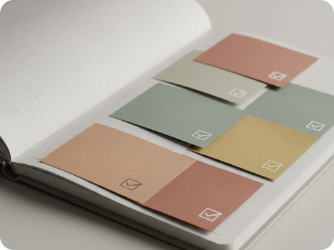
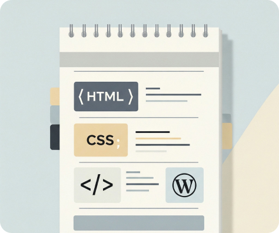
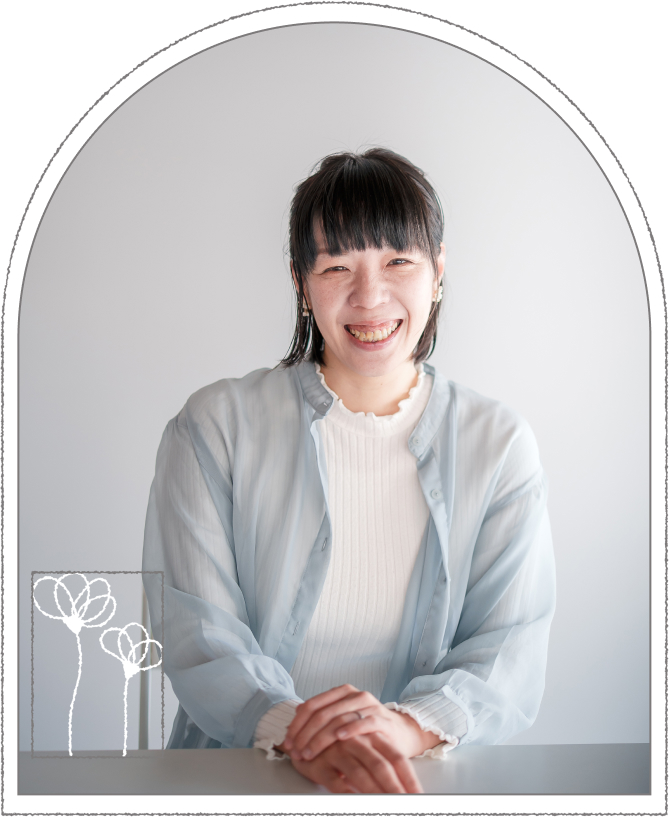

つくるだけで終わらせない、
伴走型Webコーダー
ディレクター様の進行を止めない、
安心して任せられるWebコーディング
強み Strength
1
チェック表による品質管理
制作前・制作中・納品前の各工程でチェック表を使用し、レスポンシブ崩れや構造ミス、設定漏れなどを未然に防ぎます。手戻りの少ない、安定した品質での納品を大切にしています。
2
デザイン意図の再現力
デザインカンプの世界観や余白、文字組みを大切にしながら、HTML / CSS / WordPressを用いて忠実に再現します。見た目だけでなく、更新しやすさや運用面も考慮したコーディングを心がけています。
3
進行・コミュニケーション
オンライン秘書としての経験を活かし、Slack / Chatworkを用いた進捗共有・タスク整理・連絡対応が可能です。「今どこまで進んでいるか」が常に見える状態を意識しています。
4
修正・保守対応
既存サイトのテキスト・画像修正やレイアウト調整など、公開後の軽微な修正にも柔軟に対応します。長期的に相談しやすいパートナーであることを大切にしています。
サービス内容 Service
制作会社様・デザイナー様からのコーディング業務の外注・部分依頼に対応しています。
Web制作・コーディング
- LP／Webサイトのコーディング （HTML / CSS / WordPress 対応）
- 既存サイトの保守・修正対応 テキスト・画像差し替え、軽微なレイアウト調整など
- レスポンシブ対応 （PC／タブレット／スマートフォン）
- 軽微なJavaScriptカスタマイズ （スライダー、アコーディオン、UI調整など）
進行サポート・業務補助
（オンライン秘書経験を活かした対応）
- Slack／Chatworkを使用した進行フォロー・連絡対応
- スケジュール管理・進捗整理
- 会議メモ・議事録作成補助
- 見積書・資料作成、連絡文ドラフト作成
- デザイン補助・簡易的な画像修正対応
制作フロー Flow
-
1
ヒアリング・ご相談
目的やご要望、現在の状況を丁寧にお伺いします。デザインデータの有無や、対応範囲についてもこの段階で整理します。
-
2

制作前チェック・進行確認
制作に入る前に、チェック表を用いて内容を確認します。
- PC / SPデザインの有無
- ページ構成・見出し階層
- 実装範囲・優先順位
- 納期・進行スケジュール
認識のズレを防ぎ、スムーズな進行を目指します。
-
3
コーディング・実装
デザインの意図や世界観を大切にしながら、HTML / CSS / WordPress にて丁寧にコーディングを行います。進捗は随時共有し、ご確認いただきながら進めます。

-
4
品質チェック・最終確認
納品前にチェック表を用いて最終確認を行います。
- レスポンシブ表示
- 表示崩れ・リンク・動作確認
- 構造や設定漏れの確認
安心して公開できる状態に整えます。
-
5
納品・公開後サポート
ご確認後、納品となります。公開後の軽微な修正やご相談にも、柔軟に対応いたします。
自己紹介 About

Webコーダーとして、HTML / CSS / WordPress を中心に
Webサイトのコーディングや修正、保守対応を行っています。
塾・教育現場で10年以上、秘書・庶務として勤務した後、
オンライン秘書として制作現場に関わり、
進行管理やコミュニケーション面でのサポート経験を積んできました。
Web制作においてもその経験を活かし、
制作前・制作中・納品前にはチェック表を用いた確認を行い、
認識のズレや抜け漏れを防ぐ品質管理を徹底しています。
プライベートでは二児の母として日々を過ごしながら、カメラや手芸を趣味に、つくること・記録することを楽しんでいます。
仕事でもプライベートでも、「相手にとって心地よい形」を考えることを大切にし、
つくるだけで終わらせない伴走型のWebコーダーとして向き合っています。
Contact